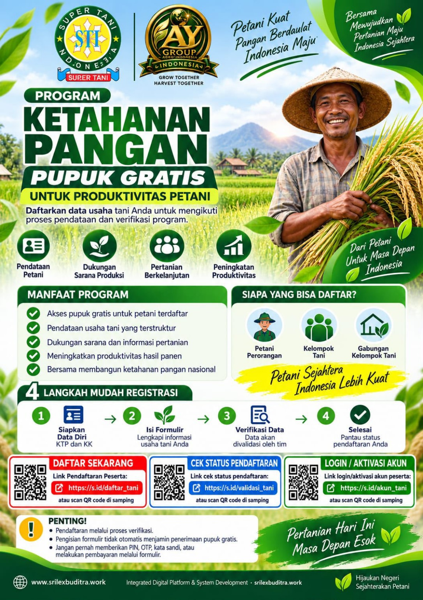

Portal Peserta
Silakan pilih layanan Program Ketahanan Pangan yang Anda perlukan.
Pendaftaran melalui proses pendataan dan verifikasi. Jangan pernah memberikan PIN, OTP, atau kata sandi kepada pihak lain.

Silakan pilih layanan Program Ketahanan Pangan yang Anda perlukan.
Pendaftaran melalui proses pendataan dan verifikasi. Jangan pernah memberikan PIN, OTP, atau kata sandi kepada pihak lain.